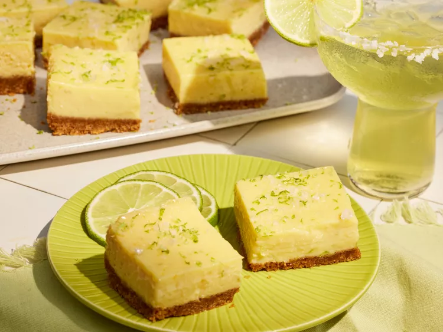

Margarita Bars

Discription
These margarita bars are perfectly sweet, and oh, so creamy. The filling
is like a cross between Key lime pie and a lemon bar, with a hint of
tequila.
Ingredients
- cooking spray
- 1 3/4 cups finely ground graham cracker crumbs
- 1/2 cup unsalted butter, melted
- 1/3 cup white sugar
- 3/4 teaspoon kosher salt, divided
- 10 large egg yolks
- 2 (14 ounce) cans sweetened condensed milk
- 4 teaspoons grated lime zest, plus more zest for garnish
- 3/4 cup fresh lime juice
- 1/4 cup blanco tequila
-
2 tablespoons orange liqueur (such as Grand Marnier®, Triple Sec®, or
Cointreau®)
- flaky sea salt
Steps
- Gather all ingredients.
-
Preheat the oven to 350 degrees F (175 degrees C). Line a 9-inch square
baking pan with aluminum foil, leaving a 2-inch overhang on all sides.
Lightly coat with cooking spray; set aside.
-
Stir together graham cracker crumbs, melted butter, sugar, and 1/4
teaspoon of the salt in a bowl until fully combined and resembles wet
sand. Transfer to prepared baking pan, and firmly press into an even
layer on bottom of pan.
-
Bake in the preheated oven until just golden brown and fragrant, 8 to 10
minutes. Remove from oven, and let cool slightly, about 5 minutes.
-
Whisk together yolks, condensed milk, lime zest and juice, and remaining
1/2 teaspoon salt in a large bowl until smooth. Add tequila and orange
liqueur, and whisk until fully combined, about 30 seconds. Pour over
slightly cooled crust.
-
Bake in the preheated oven until edges are set and center has a slight
jiggle, 25 to 28 minutes.
-
Remove from oven; let cool to room temperature in pan on wire rack,
about 1 hour. Place in freezer, uncovered, until chilled and set, at
least 2 hours or up to 12 hours.
-
Using excess foil as handles, remove bars from pan, transfer to a
cutting board; cut evenly into 16 bars, trimming edges, as desired.
Garnish with flaky sea salt and additional lime zest. Serve.